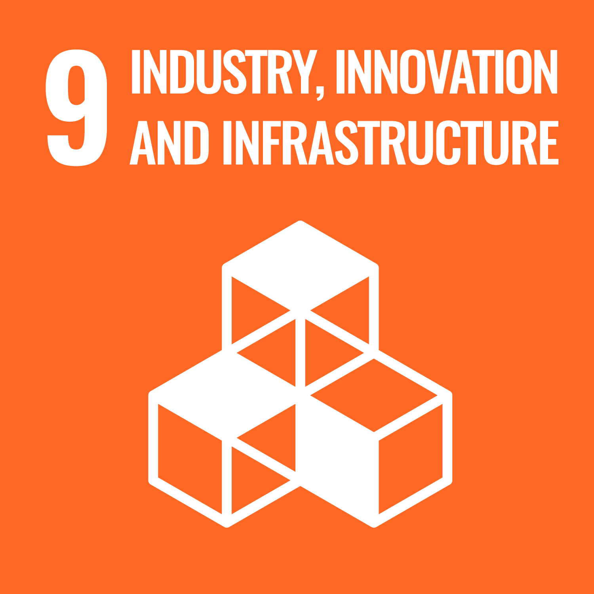

Goal ke-sembilan dari 17 tujuan pendorong SDGs (Sustainable Development Goals) berfokus pada pentingnya pembangunan infrastruktur yang berkualitas, mendukung industrialisasi yang berkelanjutan serta mendorong inovasi dalam setiap aspek. Ketiga pokok utama ini bertujuan untuk memastikan pertumbuhan ekonomi yang inklusif dan berkelanjutan. Semua ini dapat menciptakan masyarakat yang lebih gampang bangkit dari permasalahan ekonomi. Maka secara tidak langsung lebih mandiri dan sejahtera secara ekonomi.
Yang paling penting infrastruktur pembangunan yang baik, adalah dapat mendukung pembangunan secara ekonomi dan sosial. Infrastruktur seperti jalan, jembatan, sistem transportasi publik, dan jaringan listrik menjadi kegiatan utama dalam ekonomi. Infrastruktur yang kuat juga dapat memanfaat dan mendukung bagi bidang lainnya. Seperti dalam pendidikan, kesehatan, transportasi, dan secara tidak langsung meningkatan kualitas hidup masyarakat.
Dalam industrialisasi yang inklusif dan berkelanjutan, tidak hanya tercipta nya banyak lapangan kerja. Namun juga sekaligus mendorong inovasi dalam teknologi yang dapat meningkatan efisiensi produksi. Inovasi juga menjadi hal utama dalam mencapai semua tujuan ini. Dimana dengan mendorong nya pengembangan dan inovasi teknologi dapat bantu mengatasi tantangan/ isu-isu global.
Goal kesembilan ini semua berhubungan yang saling mengikat. Dengan menciptakan pertumbuhan dalam industrialisasi harus didorong oleh inovasi dan infrastruktur yang berkualitas. Pada masa depan, goal ke 9 dapat menciptakan dunia yang inovatif, berkualitas, dan berkelanjutan.